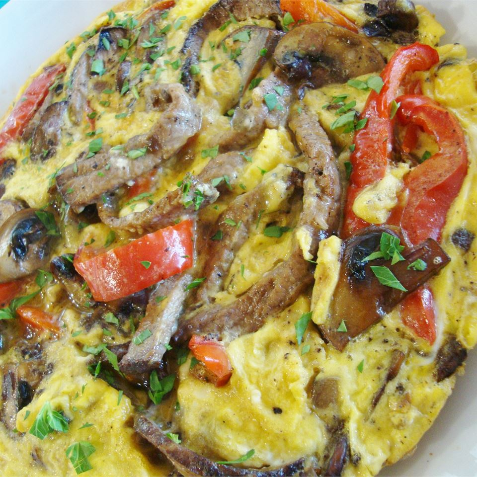

Lasagna recipe

511 calories; protein 40.2g; carbohydrates 26g; fat 29.5g; cholesterol 104.9mg; sodium 284.2mg. Full Nutrition
The best omelet in the world!
Ingredients
- 2 tablespoons butter
- ½ green bell pepper, chopped
- ½ red bell pepper, chopped
- ½ Bermuda onion, sliced
- 7 baby portobello mushrooms, sliced
- ½ pound beef tip
- ½ cup egg substitute
Steps
- Melt butter in a medium saucepan over medium heat. Stir in green bell pepper, red bell pepper, onion and portobello mushrooms. Cook until tender, about 5 minutes.
- Stir beef into the vegetable mixture, and cook until evenly brown, 5 to 10 minutes.
- Stir egg beaters into the mixture, and cook 10 minutes, or until firm.